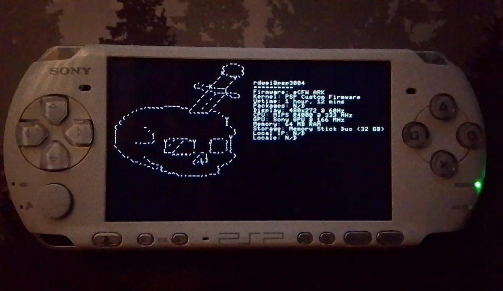

The console that has stayed with me even twenty years later is the PlayStation Portable. I still love this mobile device for various reasons. PSP is small enough to fit in a pocket and can be used on the move, which makes it incredibly convenient. In addition to that, it also has audio outputs and excellent multimedia features. It serves as an MP3 player, thus making it a versatile entertainment gadget. In terms of hardware, the device itself is impressive because of its bright screen, long-lasting battery, and expandable storage via Memory Stick Duo cards. All these features make the PSP stand out till now.
Writing software for the PSP was mostly fun. It is not just that I have always been desirous of creating something which does not run only on a PC or smartphone; in fact, PSP was perfect to offer me the chance. To develop for the PSP is an exclusive challenge demanding creativity and technical competence, and the result is more rewarding than what you get from common platforms. The prospect of understanding how PSP hardware works and optimizing code so as to make it run efficiently on this device was very thrilling and educational at the same time. In addition, it enabled me to understand the basics of Lua programming language. Lua is easy to learn, lightweight high-level scripting language that has powerful applications especially in game development. Using Lua on my PSP made me realize its simplicity and flexibility hence opened a way into future undertakings. Beyond coding, however, this project sought to expand the bounds of what can be done with this classic portable system.
The first project I worked on was a light MP3 player designed to ensure good battery life while supporting functions that are not normally seen in PSP, such as turning off the screen when listening to music. The outcome was a software without GUI but with TUI (Text User Interface), which is vital for power saving.
You can see the result here.
The Neofetch-like program was my second project created for the PSP. It displays various information including available RAM and microSD card space, as well as firmware details: version number plus its type on the screen.
To create these two software, I used an interpreter called ONELua, which supports PSP/PSVita/PS1/PS2/PS3. It was quite straightforward since Lua is a very simple language. Here is the source code of the first project.
Thanks for reading my blog post.